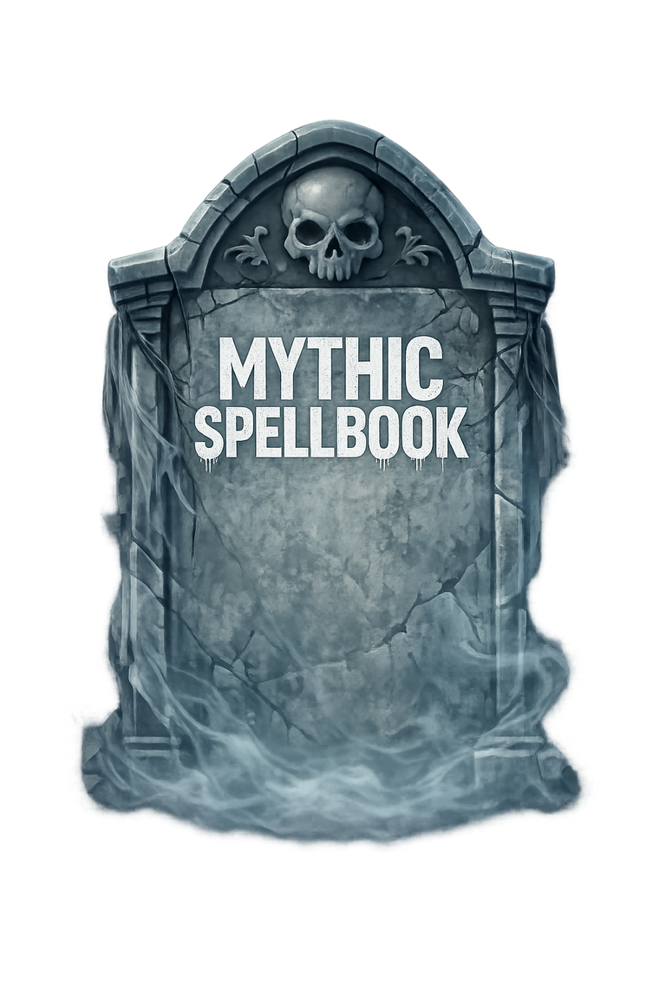

Chapter Six
Prepare your Hero before the fight — then claim the spoils after it. Loadouts and looting are where good survivors become great.
Mythic Spellbook takes the card-game genre to the next level: a world where no two survivors are likely to share the exact same experience. Nearly everything in the game carries value, and every choice matters — especially in a player-driven economy where progression, resources, and customization all play meaningful roles.
Preparation
Your Hero is far more than a leader on the battlefield — the way you customize them can completely change how you play.
Survivors can find, craft, trade, or purchase equipment and consumables through the Cinder Shop, then use them to outfit their Hero for the dangers ahead. To access your gear, open the Deck Builder and select the Hero Loadout button.
Raise your damage output and reach.
Strengthen defenses and survivability.
Burst utility for the right moment.
Single-use healing, resources & boosts.
Unique effects to complement your strategy.
The Spoils
When a Unit is defeated, it leaves behind a Tombstone — and an opportunity for survivors willing to take the risk.

Knowing when to secure a Tombstone, when to leave it alone, and which of the six methods to use can shape both your battlefield success and your camp's long-term growth. Sometimes the resources recovered from fallen units are just as valuable as winning the battle itself.